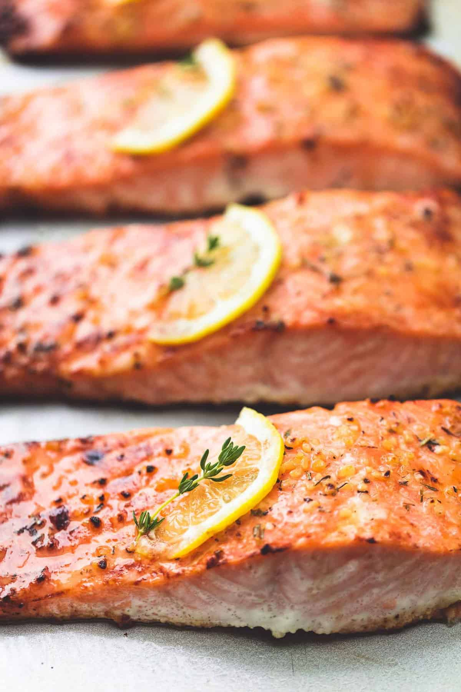

Oven Baked Salmon

Description
I can’t say I have a lot to say about this salmon, except that it is exactly what I’m calling it: Easy. Healthy. Baked. Well, and Salmon (of course). But there seriously could not be an easier recipe for baking up the most perfect, lemony, garlicky salmon every single time.
Ingredients
- Salmon Fillets
- Olive Oil
- Minced Garlic
- Salt & Cracked Black Pepper
- Lemon
Steps
- Preheat the oven to 400 degrees and grease a large baking pan. Arrange the salmon fillets on the baking sheet and season generously with salt and pepper.
- Stir together the olive oil, garlic, herbs, and juice of 1/2 of the lemon. Spoon this sauce over salmon fillets, being sure to rub all over the tops and sides of the salmon so it has no dry spots. Thinly slice the remaining 1/2 of the lemon and top each piece of salmon with a slice of lemon.
- Bake the salmon in the oven for 15-18 minutes or until the salmon is opaque and flaky when pulled apart with a fork. You can broil the last 1-2 minutes if desired.
- Garnish with fresh thyme or parsley if desired and serve.